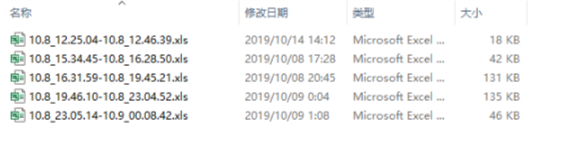
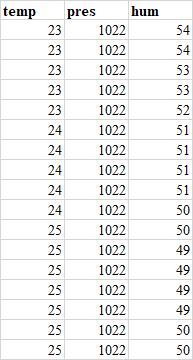

起因：学校运河杯报了个项目，制作一个天气预测的装置。我用arduino跑了BME280模块，用蓝牙模块实现两块arduino主从机透传。但是为了分析，还需要提取出数据。因此我用python写了个上位机程序，用pyserial模块实现arduiho和电脑的串口通讯，再用xlwt模块写入excel表格，用time模块获取时间作为excel的文件名。
1 import xlwt
2 import time
3 import serial
4 #设置表格样式
5 def set_style(name,height,bold=False):
6 style = xlwt.XFStyle()
7 font = xlwt.Font()
8 font.name = name
9 font.bold = bold
10 font.color_index = 4
11 font.height = height
12 style.font = font
13 return style
14
15 #写Excel
16 def write_excel():
17 if serial.isOpen():
18 print ('串口已打开\n')
19 f = xlwt.Workbook()
20 sheet1 = f.add_sheet('arduino_data',cell_overwrite_ok=True)
21 row0 = ["temp","pres","hum"]
22 time1=time.localtime(time.time())
23 #写第一行
24 for i in range(len(row0)):
25 sheet1.write(0,i,row0[i],set_style('Times New Roman',220,True))
26 i=1
27 time.sleep(5)
28 serial.flushInput()
29 while True:
30 try:
31 size = serial.inWaiting()
32 if size != 0:
33 response = serial.read(size) # 读取内容并显示
34 s=response.decode('utf-8').rstrip('\r\n').split('\t')
35 if len(s)!=3:
36 serial.flushInput()
37 continue
38 else:
39 try:
40 for j in range(len(s)):
41 sheet1.write(i,j,int(s[j]),set_style('Times New Roman',220,False))
42 print(s)
43 serial.flushInput() # 清空接收缓存区
44 i = i+1
45 time.sleep(0.5)
46 except ValueError:
47 serial.flushInput()
48 continue
49 except KeyboardInterrupt:
50 time2=time.localtime(time.time())
51 f.save(r'C:\Users\10020\Desktop\arduino_data\{0}.{1}_{2:0>2d}.{3:0>2d}.{4:0>2d}-{5}.{6}_{7:0>2d}.{8:0>2d}.{9:0>2d}.xls'.format\
52 (time1[1],time1[2],time1[3],time1[4],time1[5],
53 time2[1],time2[2],time2[3],time2[4],time2[5]))
54 serial.close()
55 print(time1)
56 print(time2)
57 quit()
58
59 if __name__ == '__main__':
60 serial = serial.Serial('COM3',9600,timeout=2)
61 write_excel()
运行代码后会一直从串口读取arduino的数据，然后写入excel。按Ctrl+c来中止代码进程，此时会在C:\Users\10020\Desktop\arduino_data\这个文件夹下生成以“开始运行时间-结束运行时间”为名称的xls文件。
代码的运行效果：


需要注意的是：
2019-10-14-14:44:49